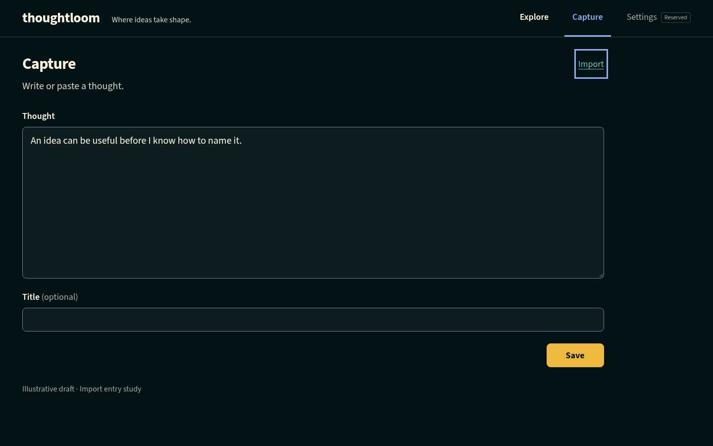
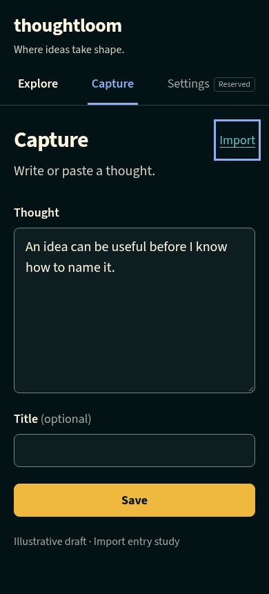
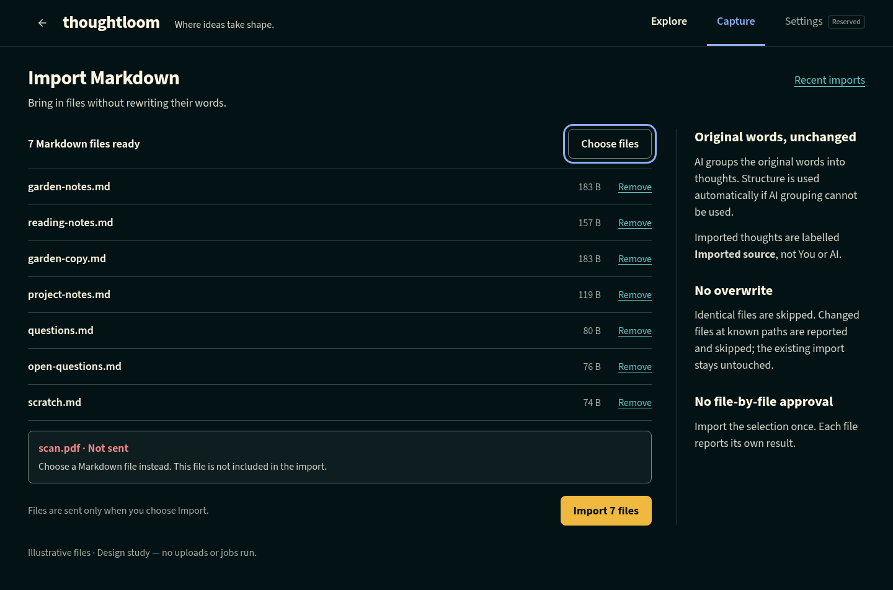
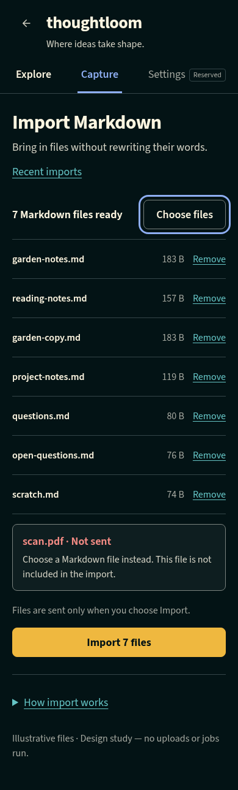
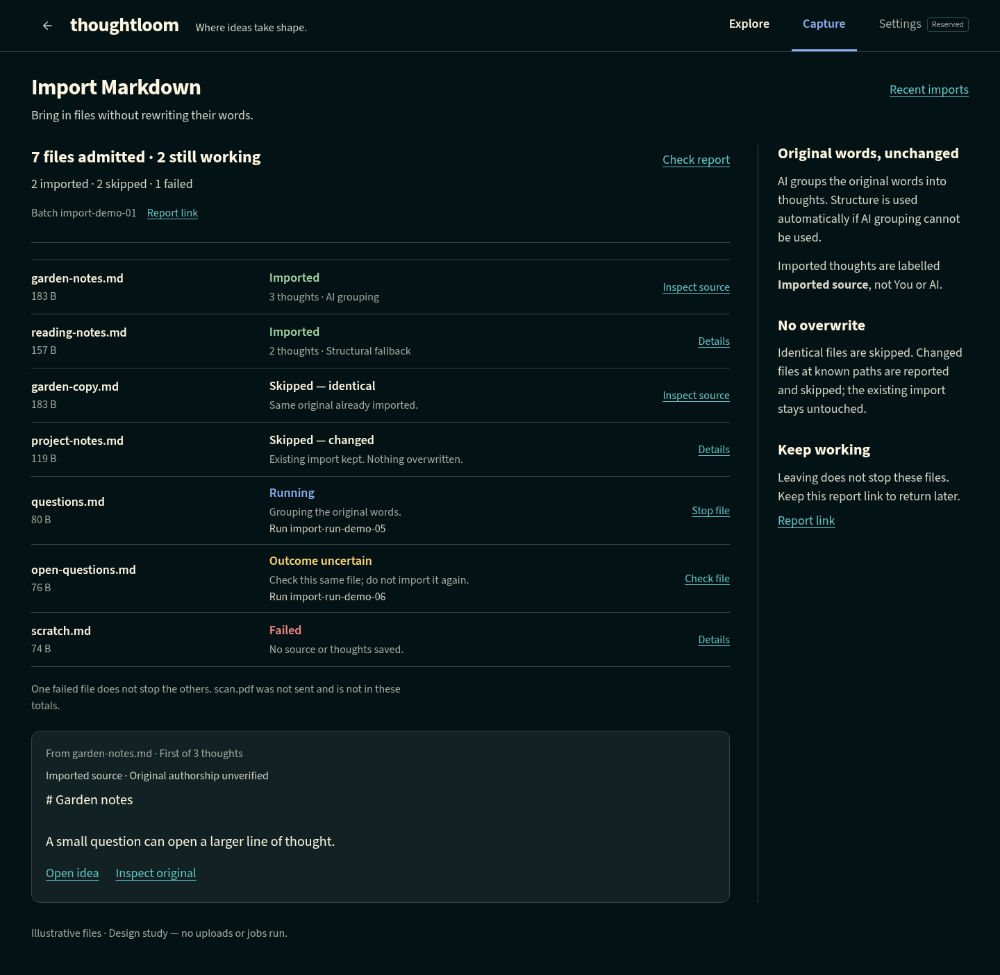
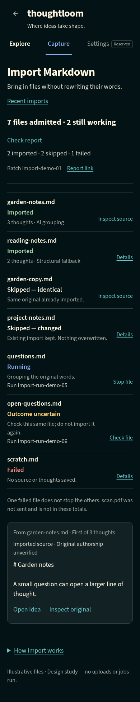

Import Workspace with Import beside the Capture page heading, outside the form. Approved visual design only; no production implementation or runtime certification. Click an image for its full-size copy.





